Обзор
Поскольку наш Китайский сад — относительно небольшой уровень, нет смысла создавать несколько глобальных окружений, между которыми уровень будет переключаться по мере продвижения игрока по нему. Скорее, лучше всего создать единую глобальную среду, содержащую разные слои, соответствующие:
- Звуки воды на уровне,
- Лесные звуки, окружающие уровень,
- Звуки для рынка, расположенного на одном конце уровня.
Эти слои становились громче по мере приближения игрока и исчезали по мере его удаления. Звуки для каждого из них включены в chapter_04 → цикл папка выбранной вами реализации промежуточного программного обеспечения, расположенная в каталоге установки ресурсов Audio Showcase, как:
| FMOD | Wwise | SDLMixer | Цель |
|---|---|---|---|
| l_cg_amb_water_a_01 – 03.wav | l_cg_amb_water_a_01 – 03.wav | Play_l_cg_amb_water_a.ogg | Первый водоем. |
| l_cg_amb_water_b_01 – 03.wav | l_cg_amb_water_b_01 – 03.wav | Play_l_cg_amb_water_b.ogg | Второй водоем. |
l_cg_amb_forest_01 - 03.wav | l_cg_amb_forest_01 - 03.wav | Play_l_cg_amb_forest.ogg | Лесной участок. |
| l_cg_amb_marketplace_01 – 03.wav | l_cg_amb_marketplace_01 – 03.wav | Play_l_cg_amb_marketplace.ogg | Рынок. |
| l_cg_amb_global_base_01 – 03.wav | l_cg_amb_global_base_01 – 03.wav | Play_l_cg_amb_global_base.ogg | Глобальная атмосфера. |
l_cg_amb_global_day_01 – 03.wav | l_cg_amb_global_day_01 – 03.wav | Play_l_cg_amb_loop_day.ogg | Дневные звуки для глобальной атмосферы. |
l_cg_amb_global_night_01 – 03.wav | l_cg_amb_global_night_01 – 03.wav | Play_l_cg_amb_loop_night.ogg | Ночные звуки для глобальной атмосферы. |
Мы начинаем с определения глобальной области, а затем создаем формы областей для каждого из необходимых слоев.
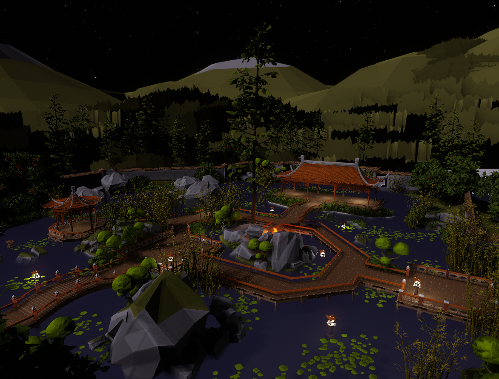
Обзор динамического окружения
FMOD Видеоурок
Рабочий процесс FMOD этой главы также описан в следующем видео:
Определение глобальной области области
Загрузив наш уровень «Китайский сад» на Sandbox пользователя CRYENGINE, создайте новую папку с именем аудио в Level Explorer (по умолчанию расположенном в левом нижнем углу редактора), щелкнув правой кнопкой мыши пустое место и выбрав значок Новая папка опция из контекстного меню. Внутри него создайте новый слой под названием форма области и double щелкните его, чтобы сделать его активным слоем.
Это означает, что все создаваемые в дальнейшем сущности будут по умолчанию добавляться на этот слой.
Над Level Explorer расположен инструмент «Создать объект», который используется для создания/добавления сущностей и объектов в сцену. Выберите Площадь → Коробка внутри него, чтобы начать создание нашей области. На этом этапе вы сможете увидеть свойства области, перечисленные на панели «Свойства», расположенной справа от окна редактора.
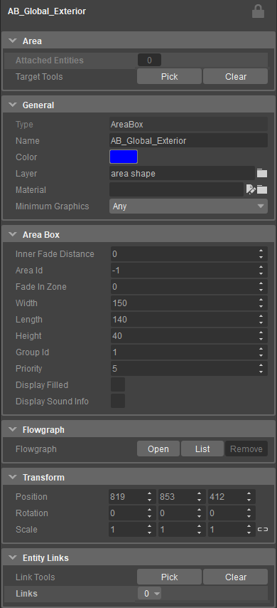
Свойства области
Вы можете установить ширину, длину и высоту рамки области в соответствии со значениями, указанными на изображении выше, или собственными значениями, при условии, что рамка области достаточно велика, чтобы полностью окружить весь уровень. Как только его размер будет установлен, щелкните в области просмотра, чтобы разместить рамку области на уровне. Также:
- Присвойте рамке области произвольное имя, используя Имя поле, расположенное под Общий вкладка панели «Свойства». Мы назвали наш Area Box AB_Global_Exterior ради этого урока.
- Установите рамку области Идентификатор группы и Приоритет до 1 и 5 соответственно, под Площадь поля вкладка панели «Свойства». Значение этих ценностей станет ясным далее.
Создание глобальной атмосферы
Идея создания глобальной атмосферы в этом разделе состоит в том, чтобы иметь фоновый слой static, который не запускается из определенной позиции, и набор отдельных кадров, которые расположены вокруг игрока как часть 3D-среды. Оба объединены для создания богатой атмосферы при относительно простой настройке.
FMOD
Вернитесь к проекту FMOD и создайте новую подпапку с именем петля в рамках Атмосфера папка вашего FMOD События вкладка и Аудиоподборка.
- Перетащите l_cg_amb_global_base_01.wav, l_cg_amb_global_base_02.wav и l_cg_amb_global_base_03.wav из _Audio_Assets/FMod Studio/chapter_04/loop папку вашего проекта в папку петля папка Audio Bin.
- Затем перетащите три файла из Audio Bin в События вкладка вашего проекта для создания нового события; Мероприятие должно быть 2D, с одним мультиинструментом. Назовите это Play_l_cg_amb_global.
Для этого события требуются еще две звуковые дорожки для дневных и ночных вариаций глобальной атмосферы.
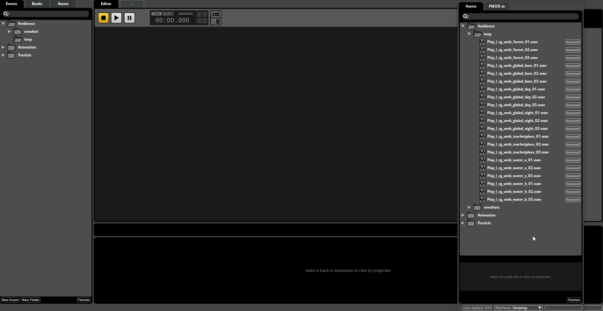
FMOD глобальная атмосфера
- В Хронология вид на l_cg_amb_global Событие, щелкните правой кнопкой мыши базовую дорожку и выберите Добавить аудиодорожку опция из меню; затем перетащите l_cg_amb_global_day_01.wav, l_cg_amb_global_day_02.wav и l_cg_amb_global_day_03.wav файлы из Audio Bin на звуковую дорожку, чтобы создать мультиинструмент для дневных звуков глобальной атмосферы.
- Повторите вышеуказанный шаг для l_cg_amb_global_night_01.wav, l_cg_amb_global_night_02.wav и l_cg_amb_global_night_03.wav файлы, создавая мультиинструмент для ночных звуков, как показано в GIF выше.
После создания трех мультиинструментов добавьте регион петли для всего Play_l_cg_amb_global Событие, описанное в предыдущая глава. Кроме того,
- Активируйте Асинхронный и циклический плейлист
опции для каждого мультиинструмента, - Добавьте регион цикла для события.
Наконец, добавьте Play_l_cg_amb_global Событие для вашего Атмосфера Саундбанк. Пересоберите все звуковые банки и сохраните проект FMOD.
Wwise
Вместо того, чтобы импортировать каждый аудиофайл из _Audio_Assets/Wwise/chapter_04/цикл папку в папку Атмосфера Actor — микшер, который мы создали в главе 01, лучше использовать функцию импорта папки Wwise.
- Щелкните правой кнопкой мыши Атмосфера Actor-Микшер и выберите Импортировать аудиофайлы вариант из меню.
- Нажмите кнопку Добавить папки... в окне импорта аудиофайлов, перейдите к _Audio_Assets/Wwise/chapter_04/ каталог и выберите Петля папка. Папка аудио/файлов столбец показывает структуру Петля папку в том виде, в каком она отображается на диске, а Объект В столбце показана структура папок, которая будет создана в Wwise. Папка Петля верхняя часть этой структуры будет служить нашим Actor-Mixer.
- В Тип объекта/Действие столбец, выберите раскрывающийся список, соответствующий этому Петля папку и измените ее значения с Виртуальная папка чтобы Actor-Микшер.
- Аналогичным образом установите Тип объекта/Действие ценности l_cg_amb_global и l_cg_amb_global_timeofday папки в Контейнер для смешивания, а остальные папки в Случайный контейнер как показано.
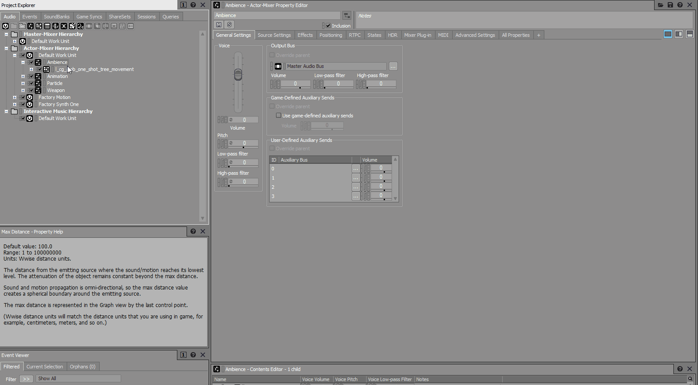
Импортировать аудиофайлы
Контейнер Blend имеет две цели:
- Для смешивания (затухания) двух или более подконтейнеров на основе значения элемента управления параметрами реального времени (RTPC).
- Сгруппировать все субконтейнеры и воспроизвести их в один и тот же момент. Это работает только в том случае, если контейнеру смешивания не назначена дорожка смешивания.
Напомним, что глобальная атмосфера, которую мы создаем, должна содержать три разных слоя, которые воспроизводятся одновременно; базовый слой, который содержит фоновый шум сверчков, дневной слой с криками птиц и ночной слой с большим количеством звуков сверчков и лягушек.
Наш l_cg_amb_global Контейнер Blend содержит два подконтейнера: l_cg_amb_global_base Случайный контейнер, соответствующий базовому слою, и l_cg_amb_global_timeofday Контейнер смешивания, который содержит слои дня и ночи в виде случайных контейнеров.
Установите l_cg_amb_global_base, l_cg_amb_global_day и l_cg_amb_global_night Случайные контейнеры для зацикливания, как мы это сделали с частицей огня в предыдущая главаи установите их переход Тип ценности для Xfade (сила). Используйте GIF ниже для справки.
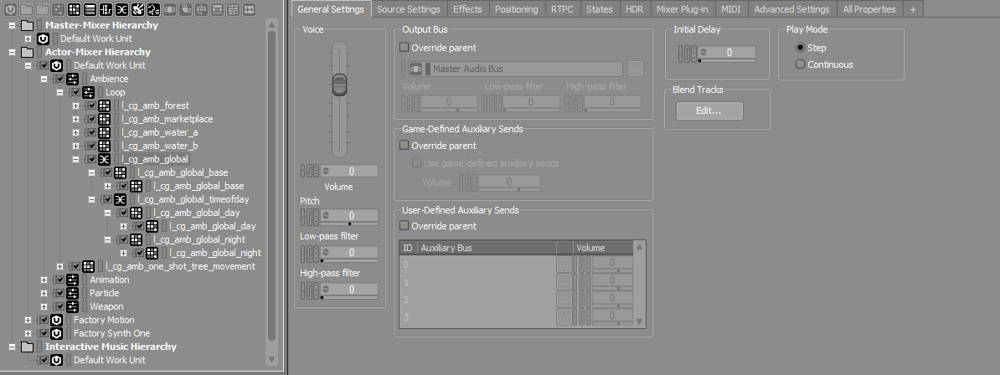
Тип перехода
Наконец, создайте новое игровое событие для l_cg_amb_global Blend Container, создайте новую папку с именем Петля в рамках Атмосфера папка в папке События вкладку и добавьте Play_l_cg_amb_global событие к нему. Также не забудьте сгенерировать все SoundBanks и сохранить проект.
SDL Микшер
Копировать тот Play_l_cg_amb_loop_base.ogg файл из _Audio_Assets/SDL Микшер/chapter_04/ папку установки Audio Showcase Level в папку Активы/Аудио/SDL_Mixer/активы каталог вашего проекта.
Соединение глобальной атмосферы с рамкой области
Вернитесь к ACE на CRYENGINE и создайте папку. петля в библиотеке Атмосфера который мы создали в главе 01.
Перетащите Play_l_cg_amb_global из панели данных промежуточного программного обеспечения в петля папку на панели управления аудиосистемой, создавая одноименный триггер.
Если вы используете микшер SDL, активируйте Бесконечный цикл и деактивировать Включить затухание и Включить панорамирование свойства Play_l_cg_amb_global звуковой триггер на панели «Свойства». Также создайте параметр для Play_l_cg_amb_global аудио триггер в Атмосфера папка панели управления аудиосистемой:
- Щелкните правой кнопкой мыши внутри Атмосфера папку и выберите Добавить → Параметр вариант. Назовите это Param_Play_l_cg_amb_global.
- Подключите соответствующий звуковой файл к параметру, выбрав параметр и перетащив его. Play_l_cg_amb_loop_base.ogg файл с панели данных промежуточного программного обеспечения в Соединения раздел панели свойств ACE.
Созданный параметр используется в пользовательском скрипте FlowGraph, включенном в уровень Audio Showcase, который изменяет громкость звуков окружения в зависимости от времени суток.
- Сохраните библиотеку и перезагрузите звуковой движок.
В CRYENGINE Audio Area Ambience — это сущность, которая позволяет реализовать простую атмосферу внутри уровня без необходимости определять ее функциональность в Flow Graph. Для работы он должен быть связан с формой области, рамкой, сферой или телом.
В Level Explorer создайте новый слой под названием audio_area_ambience в рамках аудио папка, которую мы создали в начале этой главы; double – нажмите кнопку audio_area_ambience слой, чтобы сделать его активным слоем. Поскольку нам нужно создать Звуковая зона Организация, реализующая наши Play_l_cg_amb_global атмосфера:
- В инструменте «Создать объект» выберите значок Аудио → Аудиозона Атмосфера вариант.
- Щелкните в любом месте видового экрана, чтобы разместить Звуковая зона Сущность. Мы назовем это AAA_Global_Exterior для оставшейся части этого урока.
- Прикрепите Play_l_cg_amb_global спровоцировать AAA_Global_Exterior Сущность через свою PlayTrigger поле свойства на панели «Свойства».
Напомним, что Звуковая зона Теперь объект необходимо подключить к AB_Global_Exterior Область области, которую мы создали в начале этого раздела.
- Выберите AB_Global_Exterior Область для отображения ее свойств на панели «Свойства».
- Под Площадь на вкладке «Свойства» панели «Свойства» нажмите кнопку Выбрать кнопку, затем выберите AAA_Global_Exterior Сущностьй из видового экрана.
Теперь вы сможете услышать глобальную атмосферу, но только тогда, когда камера по умолчанию в окне просмотра перспективы расположена внутри области области. В FMOD и Wwise глобальную атмосферу можно заставить исчезать по мере того, как камера видового экрана отодвигается дальше, путем создания параметра.
Если вы не можете услышать глобальную атмосферу в пределах области, переместите камеру видового экрана за пределы области и снова войдите в нее, чтобы вызвать звук.
Угасание глобальной атмосферы
SDL Пользователи Mixer могут пропустить этот раздел руководства.
FMOD
Откройте браузер пресетов в FMOD Studio и создайте Пользователь: Непрерывный параметр с именем area_fade_distance. Пусть его диапазон будет между 0 и 1.
- На вкладке «События» вашего проекта выберите Play_l_cg_amb_global Событие.
- Нажмите кнопку + рядом с вкладкой «Временная шкала события», над его временной шкалой, и добавьте значок area_fade_distance вкладка.
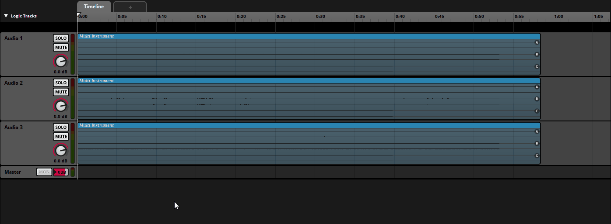
Расстояние затухания области
Теперь добавьте к событию автоматизацию, как показано в GIF выше, чтобы Play_l_cg_amb_global атмосфера полностью слышна, когда area_fade_distance Параметр достигает 1 и не слышен, когда 0:
- Щелкните правой кнопкой мыши регулятор громкости мастер-трека и выберите Добавить автоматизацию вариант из меню.
- Отрегулируйте кривую, как показано на рисунке GIF выше. Небольшую точку в центре линии между двумя точками также можно перемещать, чтобы изменить затухание звука.
Сохраните проект FMOD и не забудьте пересобрать все звуковые банки. Вернувшись в ACE, area_fade_distance параметр должен быть указан в разделе Параметры папка панели данных промежуточного программного обеспечения. Перетащите его в Атмосфера папку на панели «Элементы управления аудиосистемой», чтобы создать одноименный параметр в аудиосистеме.
- В окне просмотра выберите AAA_Global_Exterior Объект для отображения его свойств на панели «Свойства».
- Добавьте area_fade_distance параметр для ртпк поле свойства, щелкнув значок
значок напротив него. - Под AudioAreaAmbience Свойства tab — это свойство, называемое RtpcDistance. Давайте установим его значение 20.
Выходное расстояние Звуковая зона Сущность всегда масштабируется в диапазоне от 0 до 1 относительно максимального диапазона, заданного его RtpcDistance имущество, такое, что RtpcDistance Параметр увеличивается и перемещается на 1 по мере того, как слушатель приближается к форме области, с которой связана сущность.
Именно по этой причине диапазон area_fade_distance Параметр, созданный в нашем проекте FMOD, также был нормализован до значения от 0 до 1.
Wwise
Перейдите к Синхронизация игр вкладку в Project Explorer и создайте параметр с именем area_fade_distance следующим образом:
- Выберите Рабочая единица по умолчанию под Параметры игры, а затем нажмите кнопку
символ в верхней части панели. - На панели «Редактор свойств» установите Мин, Макс и По умолчанию ценности Диапазон чтобы 0, 1 и 1 соответственно; По умолчанию соответствует значению, присвоенному параметру, когда игровой движок не отправляет значение, например, при предварительном просмотре звукового триггера в ACE.
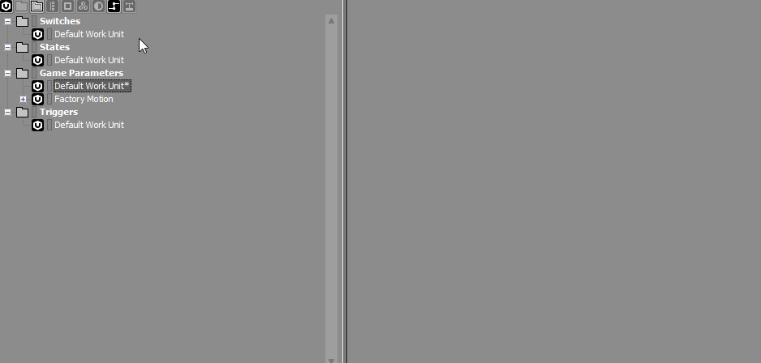
area_fade_distance
Теперь нам нужно связать этот параметр с l_cg_amb_global Контейнер для смешивания.
- Выберите l_cg_amb_global Контейнер из Аудио вкладка Обозревателя проектов.
- В редакторе свойств откройте RTPC вкладку, нажмите на
символ и выберите значок Громкость голоса вариант; это добавляет громкость голоса l_cg_amb_global Смешайте контейнер с осью Y. - Теперь нажмите кнопку
символ под ось X поле и выберите Параметры игры → Рабочая единица по умолчанию → area_fade_distance опция, которая увеличивает ценность area_fade_distance к оси X.
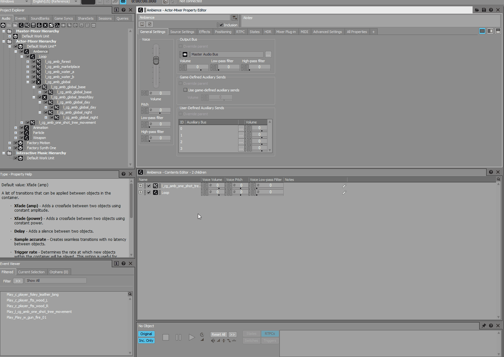
l_cg_amb_global Редактор свойств
Кривая по умолчанию, которая теперь отображается в Редакторе свойств, указывает на то, что Play_l_cg_amb_global Событие будет отключено, когда area_fade_distance ппараметр достигает 0 и будет полностью слышен, когда игровой движок установит для этого параметра значение 1.
Сохраните проект Wwise после создания всех SoundBanks. Вернувшись в ACE, area_fade_distance параметр должен быть указан в разделе Игра Параметры папка панели данных промежуточного программного обеспечения. Перетащите этот параметр в новую библиотеку под названием Параметр на панели «Элементы управления аудиосистемой», чтобы создать одноименный параметр в аудиосистеме.
- Вернувшись в область просмотра, выберите AAA_Global_Exterior Объект для отображения его свойств на панели «Свойства».
- Добавьте area_fade_distance параметр для ртпк поле свойства, щелкнув значок
значок напротив него. - Под AudioAreaAmbience Свойства tab — это свойство, называемое RtpcDistance. Давайте установим его значение 20.
Если все настроено правильно, вы обнаружите, что глобальный звук окружения теперь затухает по мере того, как камера видового экрана удаляется от глобального поля окружения.
Настройка остальных слоев атмосферы
Теперь, когда у нас работает глобальная атмосфера, пришло время добавить оставшиеся слои атмосферы для леса, рыночной площади и водоемов, как показано на следующем изображении.
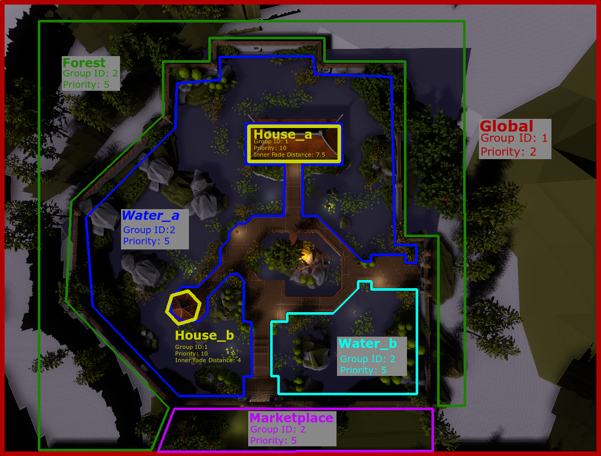
Демонстрация звуковой атмосферы
FMOD
Создайте 2D-события для всех остальных звуков, содержащихся в _Audio_Assets/FMod Studio/chapter_04/loop папка вашего проекта следующим образом:
Событие | Файлы | Тип | |
|---|---|---|---|
| 1 | Play_l_cg_amb_forest | l_cg_amb_forest_01.wav, l_cg_amb_forest_02.wav и l_cg_amb_forest_03.wav. | 2D Event с одним мультиинструментом |
| 2 | Play_l_cg_amb_marketplace | l_cg_amb_marketplace_01.wav, l_cg_amb_marketplace_02.wav и l_cg_amb_marketplace_03.wav. | 2D Event с одним мультиинструментом |
| 3 | Play_l_cg_amb_water_a | l_cg_amb_water_a_01.wav, l_cg_amb_water_a_02.wav и l_cg_amb_water_a_03.wav, | 2D Event с одним мультиинструментом |
| 4 | Play_l_cg_amb_water_b | l_cg_amb_water_b_01.wav, l_cg_amb_water_b_02.wav и l_cg_amb_water_b_03.wav. | 2D Event с одним мультиинструментом |
Обязательно активируйте Асинхронный и циклический плейлист
Сохраните проект, пересоберите Soundbanks и создайте триггеры для каждого события в ACE.
Wwise
Поскольку мы уже импортировали аудиофайлы, соответствующие остальным слоям окружения, в разделе «Создание глобального окружения» этой главы, все, что нам нужно сделать, это создать l_cg_amb_forest, l_cg_amb_marketplace, l_cg_amb_water_a и l_cg_amb_water_b Цикл случайных контейнеров.
- Выберите эти случайные контейнеры, щелкните правой кнопкой мыши и выберите Показать в мультиредакторе вариант из меню. Нужные нам опции находятся под Аудио → Общие настройки → Контейнер случайной последовательности → Режим воспроизведения. в Мультиредакторе.
- Под Режим игры, установите значение Шаговый или непрерывный поле для Непрерывный. Также активируйте Петля и Переход флажки и установите Тип перехода чтобы Xfade (сила); эти изменения будут автоматически применены ко всем выбранным контейнерам.
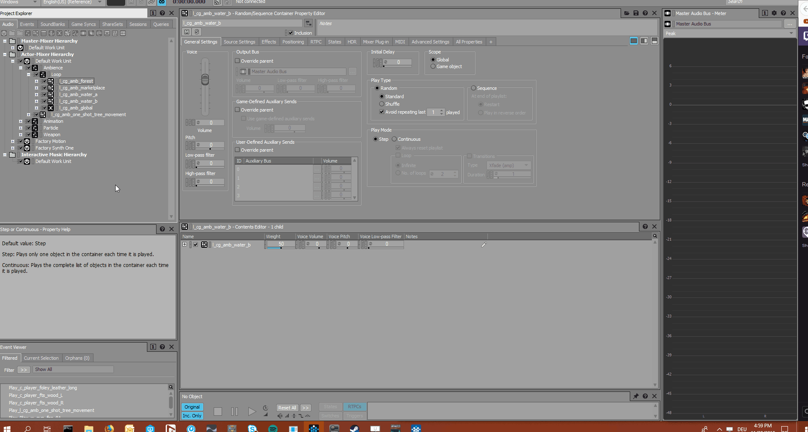
Мультиредактор
Наконец, нам нужно добавить area_fade_distance кривая параметров для каждого из случайных контейнеров.
- Выберите l_cg_amb_global Blend Container, перейдите на вкладку RTPC в редакторе свойств, щелкните правой кнопкой мыши запись на нижней панели редактора свойств и выберите Копировать вариант из меню.
- Вставьте эту запись на вкладки RTPC l_cg_amb_forest, l_cg_amb_marketplace, l_cg_amb_water_a и l_cg_amb_water_b Случайные контейнеры.
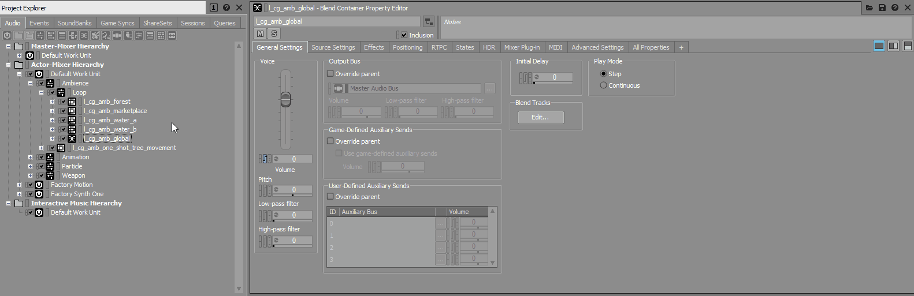
Теперь создайте новое событие для каждого из случайных контейнеров и добавьте их в список. Атмосфера → Цикл Папка событий. Сохраните проект, сгенерируйте все SoundBanks и создайте триггеры для каждого события в ACE.
SDL Микшер
Скопируйте следующие файлы из _Audio_Assets/SDL Микшер/chapter_04/ папку установки Audio Showcase Level в папку Активы/Аудио/SDL_Mixer/активы каталог вашего проекта.
- Play_l_cg_amb_forest.ogg
- Play_l_cg_amb_marketplace.ogg
- Play_l_cg_amb_water_01.ogg
- Play_l_cg_amb_water_02.ogg
Создайте аудио-триггеры для каждого файла в ACE; также активировать свои Бесконечный цикл свойства и деактивировать Включить панорамирование и Включить затухание свойства для каждого.
Создайте параметры для каждого из импортированных аудиофайлов, аналогично тому, как мы это сделали для Play_l_cg_amb_global.ogg аудиофайл ранее для пользовательского сценария Flow Graph, который изменяет громкость звуков в зависимости от времени суток. Назовите каждый параметр как Param_<имя_файла>.
Добавление фигур области на уровень
Напомним, что объект Audio Area Ambience используется для реализации простых окружений внутри уровня, которые, в свою очередь, должны быть связаны с Форма области функционировать. Затем мы начинаем с создания Фигуры областей для каждого из событий, созданных в предыдущем разделе.
- Создать новый слой area_shape в Level Explorer.
- В инструменте «Создать объект» выберите значок Площадь → Форма возможность создать Форма области.
Хотя раньше мы использовали Площадь Коробка При создании глобальной атмосферы формы леса, рынка и водоемов должны быть более точными, поэтому мы создаем Фигуры областей для каждого.
Нажмите на края одной из двух водных поверхностей, как можно точнее, чтобы приступить к созданию ее. Форма области. Всякий раз, когда вы решите остановить/закончить создание Форма, double-кликните во время установки точки; наконец, назовите созданную фигуру в соответствии с Showcase_Audio атмосфера изображение выше (AS_Water_a или AS_Water_b, например).
Убедитесь, что Закрытьд свойство активируется на панели «Свойства» при создании Форма площади, чтобы гарантировать создание закрытой формы.
- Установите значение Высота свойства созданной фигуры на любое легко читаемое значение между 10 и 50 на панели «Свойства».
- Аналогично создайте Фигуры областей для остальных водоемов, рынка, леса и двух пагод (House_a и House_b), соответственно.
- Чтобы улучшить видимость вашего Фигуры областей в видовом экране активируйте Дисплей заполнен свойство из панели «Свойства»; это заполнит созданные области цветом в видовом экране.
- Чтобы переместить созданный Форма области, используйте
кнопку в левом верхнем углу редактора. - Чтобы переместить только определенную точку созданного Форма площади, нажмите кнопку Редактировать фигуру кнопка под Операторы вкладка панели «Свойства».
Теперь нам нужно установить значения Group ID и Priority для каждого из Формы площади, как мы это делали ранее в этом разделе для глобальной области. Группа ID вместе с приоритетом помогает определить, как окружающие звуки Фигуры областей обрабатываются, так что, когда две или более фигуры принадлежат одной и той же группе ID, первой обрабатывается фигура с наивысшим приоритетом.
Это полезно, когда Фигуры областей вложены друг в друга; окружение звуковой области, прикрепленное к Форма области остановит воспроизведение, когда слушатель войдет во внутреннюю Форма площади, если приоритет внутренней формы выше внешней. Если значения группы ID и приоритета двух или более фигур равны, фигуры не оказывают влияния друг на друга.
Используйте следующую настройку группы ID и приоритета для Фигуры областей создано.
| Свойства AS / AB | Глобальный | AS_Water_a | AS_Water_b | Лес | Торговая площадка | House_a | House_b |
|---|---|---|---|---|---|---|---|
| Группа ID | 1 | 2 | 2 | 2 | 2 | 1 | 1 |
| Приоритет | 2 | 5 | 5 | 5 | 5 | 10 | 10 |
| Внутреннее расстояние затухания | 0 | 0 | 0 | 0 | 0 | 7.5 | 4 |
Внутреннее расстояние затухания свойство определяет, насколько атмосфера Форма области сливается с другим Форма более высокого приоритета. Вы заметите, что обе пагоды имеют более высокий приоритет по сравнению с другими фигурами; цель состоит в том, чтобы глобальная атмосфера исчезла, когда слушатель входит в одну из пагод.
Именно по этой причине Внутреннее расстояние затухания стоимость недвижимости для House_01 и House_02 были установлены на 7,5 и 4 соответственно.
Активация Отображение информации о звуке флажок на панели свойств House_01 и House_02 Фигуры областей раскрывает параметры звукового препятствия для сторон фигур. Установка флажка помечает эту сторону как препятствие; расстояние игрока от фигуры области не рассчитывается с учетом закрытых сторон.
Поскольку мы не требуем, чтобы атмосфера исчезала по мере удаления от игрока на полу/крыше пагоды, стороны, соответствующие этажам/крышам, можно деактивировать. Загороженные стороны Форма области отмечены красным.
Создание объектов AAA для всех фигур площади
С Фигуры областей созданный для леса, рынка, двух водоемов и двух пагод в предыдущем разделе, теперь нам нужно создать объекты Audio Area Ambience для каждого из Фигуры областей, кроме пагод (House_a и House_b). При этом обязательно установите audio_area_ambience слой в качестве активного слоя.
После создания объектов Audio Ambience установите значения их Играть в триггер, ртпк и Расстояние Rtpc поля на следующие значения.
| AAA Свойства | Глобальный | AS_Water_a | AS_Water_b | Лес | Торговая площадка | ||||||||||||||||||||||||||||||
|---|---|---|---|---|---|---|---|---|---|---|---|---|---|---|---|---|---|---|---|---|---|---|---|---|---|---|---|---|---|---|---|---|---|---|---|
| Играть в триггер | Play_l_cg_amb_global | Play_l_cg_amb_water_a | Play_l_cg_amb_water_b | Play_l_cg_amb_forest | Play_l_cg_amb_marketplace | ||||||||||||||||||||||||||||||
| ртпк |
|
|
|
|
| ||||||||||||||||||||||||||||||
| Расстояние Rtpc | 20 | 5 | 5 | 30 | 7 |
Не стесняйтесь экспериментировать со своими собственными Расстояние Rtpc ценности; напомним, что Расстояние Rtpc Свойство определяет расстояние, на котором параметр меняется от 1 до 0.
Наконец, не забудьте прикрепить объекты Audio Area Ambience к соответствующим им объектам. Фигуры областей используя Выбрать кнопка, расположенная под Операторы вкладка Области фигур' Панель свойств. Затем вы можете продолжить и послушать результат в игровом режиме. Если хотите, вы можете даже создать собственную атмосферу для каждой из пагод, хотя отсутствие звука часто оказывает большее влияние на слушателя.
Один выстрел для птичьих звонков
На этом этапе мы создали динамическую атмосферу с пятью различными слоями. Чтобы еще больше повысить реалистичность, давайте добавим несколько случайных кадров в глобальную атмосферу, используя объекты Audio Trigger Spot (ATS).
FMOD
Расположен в _Audio_Assets/FMod Studio/chapter_04/Oneshot В папке вашего проекта находятся 11 различных птичьих криков, названных Play_l_cg_amb_one_shot_bird_a/b/c/d/e_0X.wav. Перетащите их в свою Audio Bin, чтобы создать пять событий следующим образом:
Событие | Файлы | Тип | |
|---|---|---|---|
| 1 | Play_l_cg_amb_one_shot_bird_a | l_cg_amb_one_shot_bird_a_01.wav, l_cg_amb_one_shot_bird_a_02.wav, и l_cg_amb_one_shot_bird_a_03.wav | 3D Event с одним мультиинструментом |
| 2 | Play_l_cg_amb_one_shot_bird_b | l_cg_amb_one_shot_bird_b_01.wav и l_cg_amb_one_shot_bird_b_02.wav | 3D Event с одним мультиинструментом |
| 3 | Play_l_cg_amb_one_shot_bird_c | l_cg_amb_one_shot_bird_c_01.wav и l_cg_amb_one_shot_bird_c_02.wav | 3D Event с одним мультиинструментом |
| 4 | Play_l_cg_amb_one_shot_bird_d | l_cg_amb_one_shot_bird_d_01.wav и l_cg_amb_one_shot_bird_d_02.wav | 3D Event с одним мультиинструментом |
| 5 | Play_l_cg_amb_one_shot_bird_e | l_cg_amb_one_shot_bird_e_01.wav и l_cg_amb_one_shot_bird_e_02.wav | 3D Event с одним мультиинструментом |
Поскольку мы хотим слышать крики птиц на всем уровне, мы установим Макс расстояние затухания каждого события до 100 метров в плагине Spatializer. Добавьте события в звуковой банк Ambience, перестройте все звуковые банки и вернитесь к ACE, чтобы создать звуковые триггеры для каждого из них.
Wwise
Используя функцию «Импортировать папку», как мы это делали при создании глобальной атмосферы, добавьте Ваншоты папка, включенная в _Audio_Assets/Wwise/chapter_04/ каталог вашего проекта, в папку Атмосфера Actor Микшер. Не забудьте си т. д. Тип объекта/Действие из Ваншоты папка чтобы Actor-Микшер.
Включено в Ваншоты папка содержит 11 различных птичьих криков, названных l_cg_amb_one_shot_bird_a/b/c/d/e_0X.wav. Создайте пять случайных контейнеров для этих криков птиц следующим образом:
Случайный контейнер | Аудио файлы | |
|---|---|---|
| 1 | l_cg_amb_one_shot_bird_a | l_cg_amb_one_shot_bird_a_01.wav, l_cg_amb_one_shot_bird_a_02.wav, и l_cg_amb_one_shot_bird_a_03.wav |
| 2 | l_cg_amb_one_shot_bird_b | l_cg_amb_one_shot_bird_b_01.wav и l_cg_amb_one_shot_bird_b_02.wav |
| 3 | l_cg_amb_one_shot_bird_c | l_cg_amb_one_shot_bird_c_01.wav и l_cg_amb_one_shot_bird_c_02.wav |
| 4 | l_cg_amb_one_shot_bird_d | l_cg_amb_one_shot_bird_d_01.wav и l_cg_amb_one_shot_bird_d_02.wav |
| 5 | l_cg_amb_one_shot_bird_e | l_cg_amb_one_shot_bird_e_01.wav и l_cg_amb_one_shot_bird_e_02.wav |
Создайте новый набор акций затухания на Ваншоты Actor-Микшер, аналогичный тому, который используется на Звук частиц у костра. Однако, поскольку мы хотели бы слышать крики птиц на всем уровне, установите Макс. расстояние доли затухания — установите на 100 м. Назовите это Attenuation_100m.
Наборы долей затухания передаются по наследству, то есть все Ваншоты Actor – дочерние элементы Mixer будут использовать те же настройки затухания.
Наконец, создайте События для каждого из случайных контейнеров птичьего крика, добавьте их в новый Ваншоты папку «События» и сгенерируйте все SoundBanks. Сохраните проект, прежде чем вернуться к ACE, чтобы создать звуковые триггеры для каждого из них.
SDL Микшер
Один выстрел из «Птичьего крика» включен в _Audio_Assets/SDL Микшер/chapter_04/ папка вашего уровня Audio Showcase как Play_l_cg_amb_one_shot_bird_a.ogg, Play_l_cg_amb_one_shot_bird_b.ogg, Play_l_cg_amb_one_shot_bird_c.ogg и Play_l_cg_amb_one_shot_bird_d.ogg. Копировать эти в Активы/Аудио/sdlmixer/активы каталог вашего проекта и создайте аудио-триггеры для каждого.
Также создайте параметры с именем Param_<имя_файла> для каждого созданного аудио-триггера.
Активируйте Включить панорамирование и Включить затухание свойства для каждого из триггеров вызова одного выстрела.
После того, как события птичьего звонка были созданы с использованием выбранного вами промежуточного программного обеспечения, создайте новый слой под названием one_shots внутри слоя Level Explorer и нажмите его, удерживая клавишу double, чтобы сделать его активным слоем.
- Создайте пять звуковых триггерных точек, соответствующих каждому событию крика птиц. Play_l_cg_amb_one_shot_bird а/б/к.д.
- Разместите их в четырех разных местах над стеной сада.
- Удерживая клавишу Shift, щелкните первую и последнюю из пяти точек аудио-триггера, чтобы активировать опцию многократного обновления; активировать DrawRandomizationArea Свойство отладки на панели «Свойства», на котором отображается рамка вокруг области, к которой применяется рандомизация объекта ATS.
Теперь настройте значения RandomizationArea Свойство, определяющее размеры областей, ставших видимыми на предыдущем шаге. Звук триггера, связанный с пятном аудио-триггера, случайным образом располагается в пределах его области.
Хотя SDL Mixer не обеспечивает никакой формы рандомизации звука, его функцию затухания звука можно использовать как средство рандомизации громкости звука. Это можно сделать, дав RandomizationArea области области большое значение глубины, так что звуки будут громче, когда они срабатывают близко к игроку, и тише, когда они срабатывают дальше.
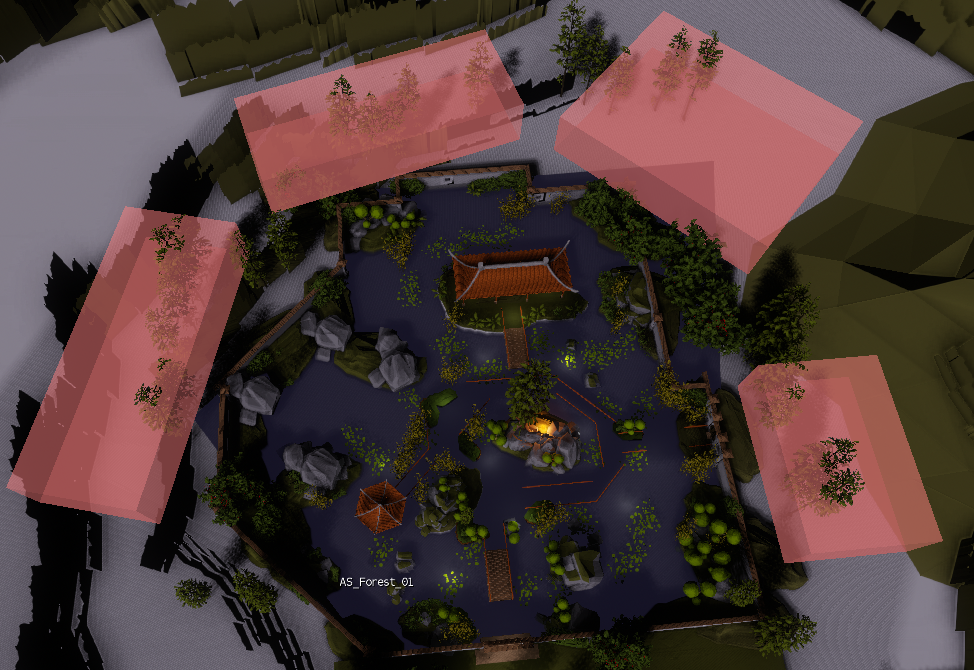
Ящики для звонков птиц
Наконец, подключите звуковые триггеры птичьего крика, созданные в начале этого раздела, к звуковым триггерным точкам, используя Играть в триггер свойство на панели свойств объекта ATS. Мы также установим Поведение свойство каждого ATS Скорость срабатывания и его Макс. задержка значение для 100,000; это приводит к тому, что звуковые триггеры выполняются каждые «x» секунд после завершения предыдущего экземпляра триггера, где «x» — случайное значение между их Минимальная задержка и Макс. задержка ценности.
Лесные выстрелы
В завершение мы добавим несколько кадров лесной атмосферы через FMOD/Wwise.
Для реализации одноразовых снимков леса требуется использование рассеивающего инструмента (FMOD) или случайного контейнера (Wwise); поскольку в микшере SDL нет системы для достижения подобных эффектов, реализация снимков леса с помощью микшера SDL в этом руководстве опущена. Пользователи по-прежнему могут создавать установку, аналогичную «Снимок птицы» для «Снимок леса»; однако реализовать это было бы утомительно.
FMOD
Вернитесь в свой проект FMOD и откройте Play_l_cg_amb_forest атмосферу, которую мы создали ранее в этом разделе.
- Добавьте новую аудиодорожку в Хронология вкладка Play_l_cg_amb_forest Событие.
- К этой аудиодорожке добавьте инструмент Scatterer, щелкнув правой кнопкой мыши его временную шкалу и выбрав Добавить рассеивающий инструмент вариант из меню.
- Нажмите на инструмент рассеивателя и откройте аудиоподборку; перетащите l_cg_amb_forest_oneshot_crack_01 - 06 .wav файлы из _Audio_Assets/FMod Studio/chapter_04/Oneshot папку каталога вашего проекта и поместите их в папку Атмосфера → Ваншот папку вашего Audio Bin.
- Затем перетащите l_cg_amb_forest_oneshot_crack_01 – 05.wav в список воспроизведения инструмента Scatterer, как показано на GIF ниже.
Инструмент Scatterer позволяет рандомизировать частоту срабатывания и расположение звука, что идеально подходит для снимков леса, которые мы хотели бы добавить.
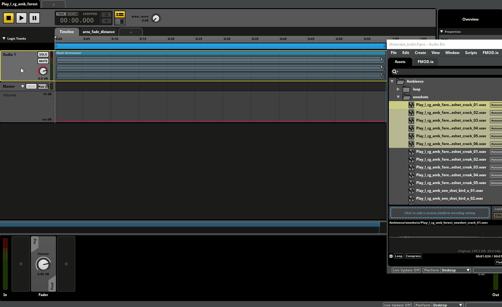
Плейлист Scatterer Instrument
В списке воспроизведения инструмента Scatterer отображаются все аудиоресурсы, которые могут быть запущены им; обязательно увеличьте инструмент рассеивателя до точной длины определенной области петли.
Выбрав инструмент Scatterer, вы можете изменить частоту запуска файлов в списке воспроизведения инструмента Scatterer, используя панель в нижней части окна FMOD. Для одного выстрела в лесной трещине мы установили интервал появления на 2.50–6.50 с. и минимальное/максимальное расстояние рассеяния 0.10 - 1.00. Поскольку исходные активы уже звучат тонко и далеко, нам не нужно слишком большое значение расстояния.
Повторите вышеуказанные шаги, чтобы создать еще одну звуковую дорожку, используя l_cg_amb_forest_oneshot_creak_01 - 05 .wav файлы из вашего проекта _Audio_Assets/FMod Studio/chapter_04/Oneshot папка.
- Установите интервал появления в более широком диапазоне. 8.00-22.00, а также его минимальное и максимальное расстояние рассеяния до 2.00 и 30.0 соответственно.
- Назовите обе звуковые дорожки, чтобы их можно было отличить позже.
Wwise
В Аудио вкладке обозревателя проектов Wwise, создайте родительский контейнер Blend для l_cg_amb_forest Случайный контейнер; назовите контейнер Blend l_cg_amb_forest также.
- Добавьте новый случайный контейнер в l_cg_amb_forest Смешайте контейнер и назовите его. l_cg_amb_forest_oneshot_crack. Перетаскивание файлов l_cg_amb_forest_oneshot_crack_01 - 06 из Ваншот Actor-Микшер в l_cg_amb_forest_oneshot_crack Случайный контейнер.
- В редакторе свойств установите Режим игры чтобы Петля, активируйте Переходы переключите и установите переход Тип чтобы Триггерная скорость.
Установите Продолжительность значение до 4,5 секунд и нажмите кнопку double
значок открытия окна Рандомайзера; отметьте Включено установите флажок, чтобы активировать Рандомайзер, и установите Мин. смещение/Макс. смещение до -2 и 2 соответственно. Продолжительность триггерной частоты определяет, как часто l_cg_amb_forest_oneshot_crack Запускается случайный контейнер и для воспроизведения выбирается новый звук; Рандомайзер помогает применить дополнительную рандомизацию к частоте срабатывания, позволяя немного варьировать время между каждым звуком.
Также было бы уместно, чтобы один кадр воспроизводился в случайных позициях, а не в двухмерном пространстве вокруг игрока.
- Переключитесь на Позиционирование вкладке в Редакторе свойств, отметьте флажок Переопределить родительский элемент флажок и установите значение Раскрывающийся список «3D-пространство» чтобы Позиция + Ориентация.
- Назначьте Attenuation_100m Набор общих ресурсов, созданный в предыдущем разделе, для Затухание поле.
- Измените значение параметра 3D-позиция поле для Излучатель с автоматикой из раскрывающегося списка можно установить определяемое пользователем положение автоматизации звука вокруг слушателя.
Нажмите кнопку Автоматизация... Кнопка, чтобы открыть окно 3D-автоматизации. Создайте новый путь автоматизации и установите для случайного диапазона значения, используемые на изображении ниже; также активируйте Выберите новый путь, когда начнется звук переключите, чтобы принудительно использовать новый путь автоматизации каждый раз, когда воспроизводится звук.
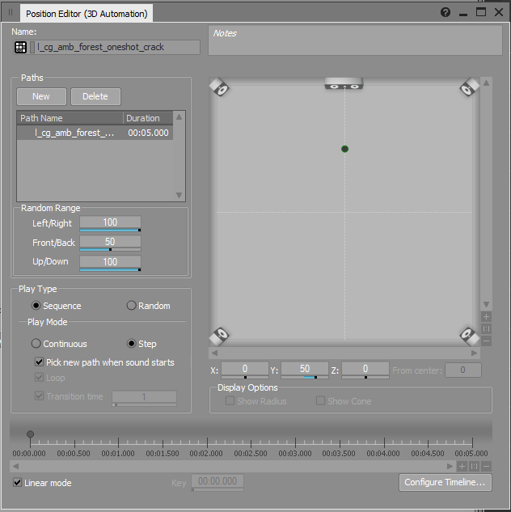
l_cg_amb_forest_oneshot_crack автоматизация
Повторите описанную выше настройку для l_cg_amb_forest_oneshot_creak_01 - 05 аудиофайлы, чтобы создать l_cg_amb_forest_oneshot_creak Случайный контейнер внутри l_cg_amb_forest Контейнер для смешивания.
- Установите частоту срабатывания Продолжительность до 3 секунд.
Установите Мин. смещение/Макс. смещение до -1 и 1 соответственно в Рандомайзере.
Вышеупомянутое Продолжительность и Мин. смещение/Макс. смещение значения были установлены для более естественного звучания атмосферы.
Прежде чем генерировать все SoundBanks, обязательно обновите Play_l_cg_amb_forest Событие.
- Выберите Play_l_cg_amb_forest Мероприятие в События вкладка Редактора свойств, чтобы открыть Редактор событий на правой панели.
- Переключитесь на Аудио вкладку в редакторе свойств, перетащите l_cg_amb_forest Blend Container Blend Container в редакторе событий.
Сохраните проект, сгенерируйте все SoundBanks и попробуйте все изменения в Sandbox.
Изменение глобальной атмосферы в зависимости от времени суток
Теперь, когда мы закончили настройку атмосферы, нам бы хотелось, чтобы она менялась в зависимости от времени суток на уровне. Это относительно легко сделать, поскольку большая часть информации автоматически передается в ACE по умолчанию.
SDL Микшер обрабатывает параметры таким образом, который не подходит для реализации атмосферы в зависимости от времени суток. Настройка времени суток, аналогичная FMOD и Wwise, может быть достигнута в сочетании со сценариями Flow Graph, что выходит за рамки данного руководства; поэтому он был опущен в реализации микшера SDL в этом руководстве.
FMOD
- Создайте новый параметр с именем время суток с диапазоном 0–24 в вашем проекте FMOD и добавьте его в ACE.
- В проекте FMOD выберите Play_l_cg_amb_global Событие и добавьте time_of_day Параметр для него с помощью + значок помимо своего Хронология и area_fade_distance параметры на центральной панели.
- Затем добавьте автоматизацию громкости для дорожек Night и Day Audio, щелкнув правой кнопкой мыши диск громкости на каждой из дорожек и выбрав Добавить автоматизацию вариант из меню.
- Добавьте точки автоматизации на кривые громкости обоих треков, нажав на пунктирную линию; Дневная атмосфера должна быть слышна с 10:00 до 18:00, постепенно усиливаясь/затухая в течение 4 часов. При этом ночная атмосфера должна быть слышна в оставшиеся часы. Кривые должны напоминать те, что на изображении ниже.
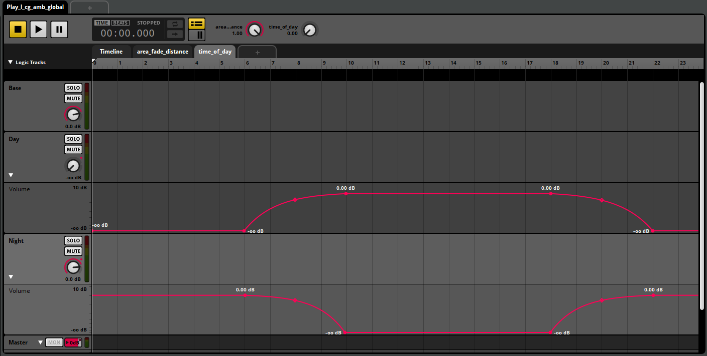
Автоматизация объема
Теперь вы можете сохранить свой проект, восстановить Soundbanks и вернуться к CRYENGINE.
Wwise
В Синхронизация игр вкладке Wwise, создайте новый параметр с именем time_of_day в диапазоне от 0 до 24 и установите значение по умолчанию 12 через редактор свойств.
Теперь нам нужно добавить дорожку смешивания в l_cg_amb_global_timeofday Контейнер для смешивания.
- Выберите контейнер Blend и нажмите кнопку Редактировать... кнопка в Смешать треки раздел Редактора свойств.
- В открывшемся редакторе дорожек смешивания активируйте Кроссфейд переключите и нажмите кнопку
значок, чтобы добавить time_of_day параметр на дорожку смешивания. Вы также можете переименовать трек по своему усмотрению.
Созданная дорожка смешивания отображается под Смешать треки раздел Редактора контента.
- Перетащите l_cg_amb_global_night Случайный контейнер на левой панели редактора контента и перетащите его в Смешать треки раздел. Повторите то же самое для l_cg_amb_global_day Контейнер и для l_cg_amb_global_night. Это определяет поведение контейнеров в редакторе треков смешивания, например, день Контейнер находится между двумя ночь Контейнеры.
- Нажмите на любой другой случайный контейнер, а затем снова нажмите l_cg_amb_global_timeofday; Если вы снова откроете редактор Blend Track Editor, вы сможете увидеть три отдельные области, соответствующие ночь, день и ночь Контейнеры соответственно.
- Края каждой дорожки можно перемещать; установить первый l_cg_amb_global_night отследить до time_of_day диапазон параметров 0-10, средний l_cg_amb_global_day трек в диапазоне 6-22, а второй l_cg_amb_global_night трек в диапазоне 18-24. Это приводит к затуханию 6-10 и 18-22 между день и ночь треки.
Сравните результат с GIF ниже; изменения можно просмотреть, нажав кнопку пробел, и перемещая time_of_day курсор над дорожкой наложения в редакторе дорожек наложения.
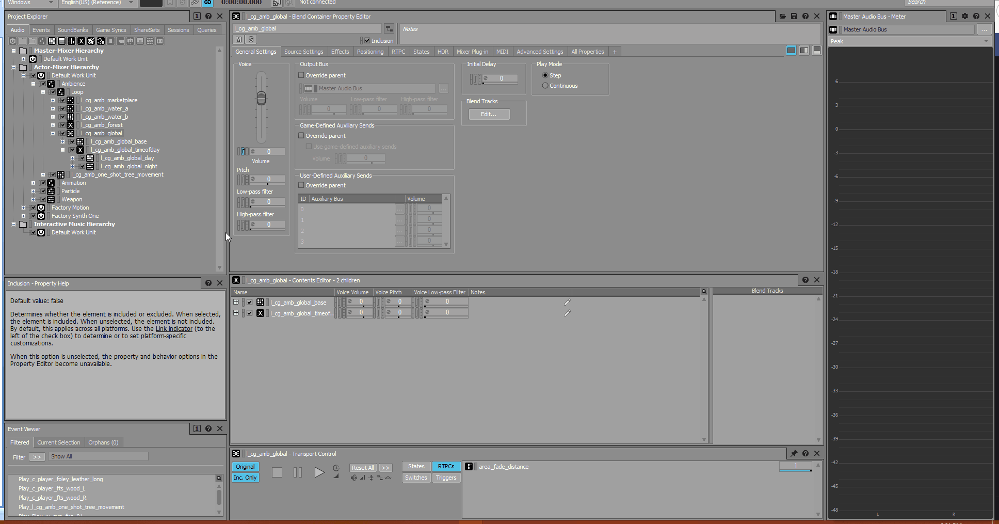
time_of_day Смешать трек
Если вы не можете предварительно просмотреть звуки, возможно, ваш area_fade_distance параметр установлен на 0. Это можно изменить, нажав на кнопку RTPC кнопка в Транспортный контроль панель в нижней части дизайнерского макета вашего проекта.
Сохраните проект, сгенерируйте все SoundBanks и вернитесь к CRYENGINE. Перезагрузите звуковой движок, перетащите time_of_day параметр из панели данных промежуточного программного обеспечения в Параметр Библиотека в панели управления аудиосистемой.
Перезагрузите звуковой движок и откройте инструмент Environment Editor с помощью Инструменты → Environment Editor в главном меню Sandbox.
- Сначала создайте новую предустановку среды, выбрав Новый вариант из Environment Editor

- В этом окне вы теперь можете настроить различные свойства цикла дня и ночи на уровне. Установите скорость цикла день-ночь на 1, используя кнопку Скорость поле внизу окна.
- Перейдите в игровой режим, чтобы опробовать изменения.
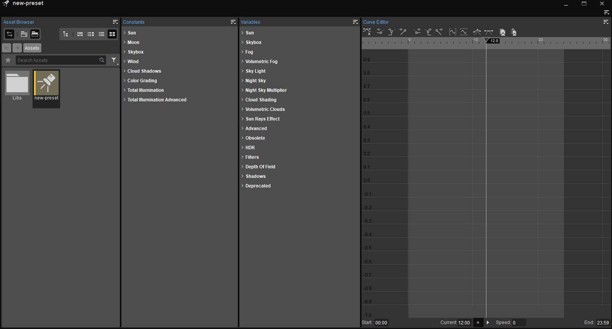
Environment Editor
Если глобальная атмосфера не воспроизводится, выйдите из игрового режима и переместите камеру видового экрана далеко за пределы области глобальной атмосферы, прежде чем вернуть ее обратно, чтобы повторно запустить атмосферу.
Заключение
Поздравляем, вы дочитали учебник Audio Showcase до конца, используя CRYENGINE V. В конце этого раздела мы собрали несколько предложений, чтобы вы получили максимальную отдачу от реализации промежуточного программного обеспечения на CRYENGINE.
- Обязательно всегда сохраняйте проект FMOD/Wwise, чтобы видеть вновь созданные события, параметры или звуковые банки в ACE.
- После восстановления звуковых банков звуковой движок CRYENGINE всегда необходимо обновлять, чтобы кэшированные звуковые банки обновлялись.
- Обратите внимание на названия треков, параметров, событий, банков, папок и т. д. По мере увеличения размера проектов отслеживать все переменные может быстро становится сложно.
- Если по какой-то причине вы не слышите событие в FMOD/Wwise, убедитесь, что ни для одного параметра не установлено значение, которое делает событие не слышимым.